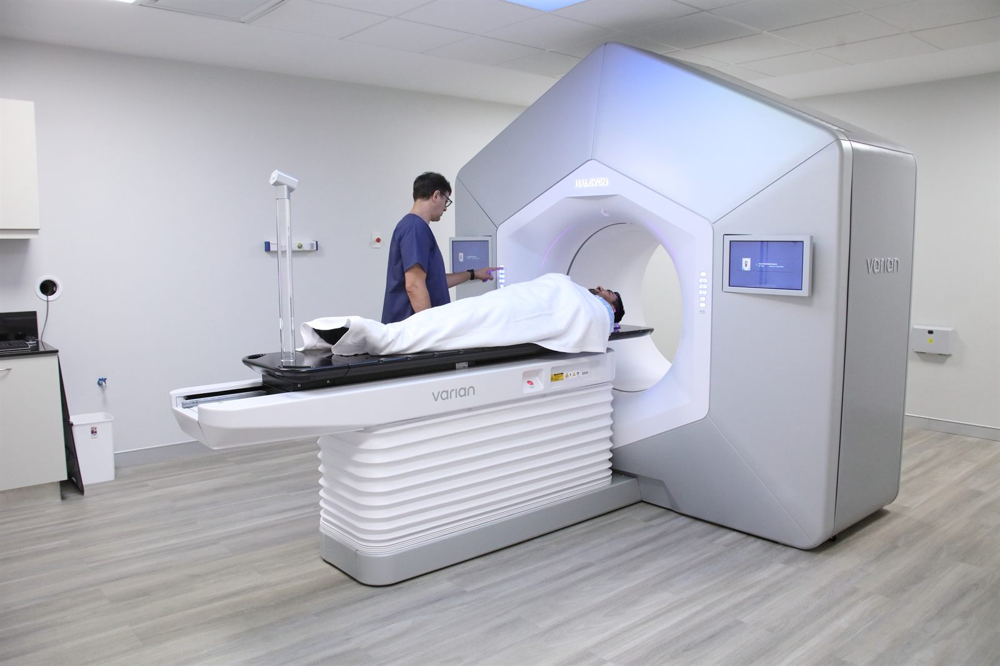
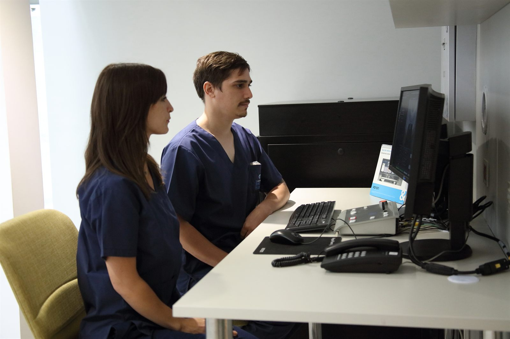
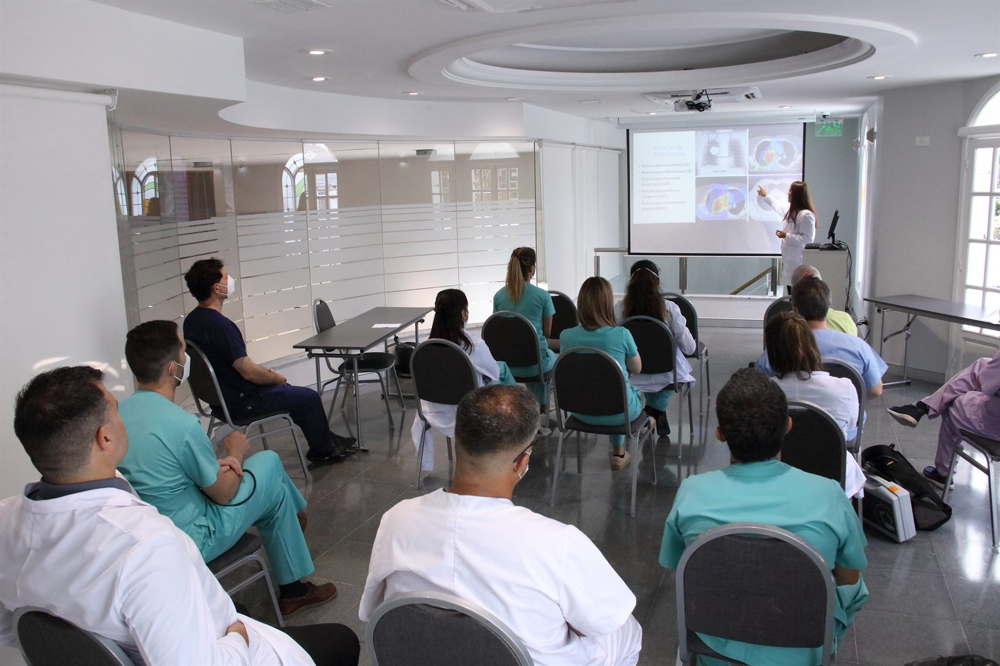
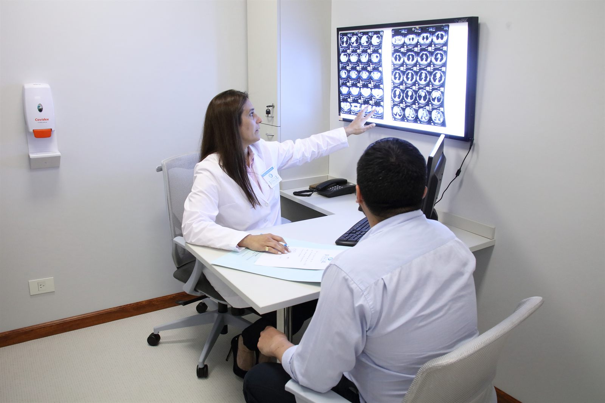
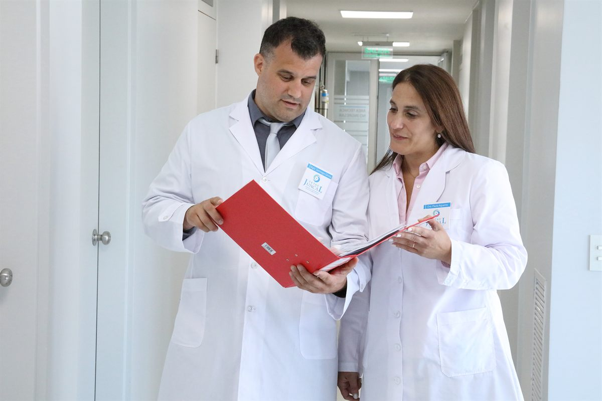
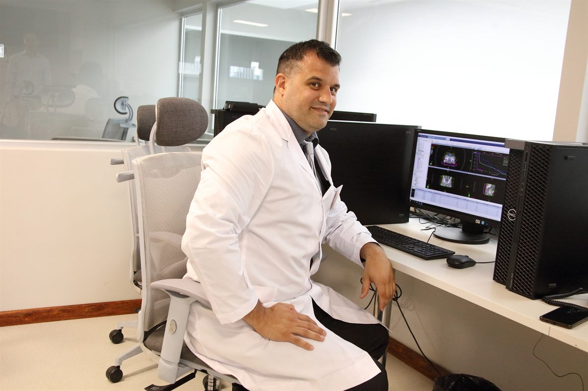
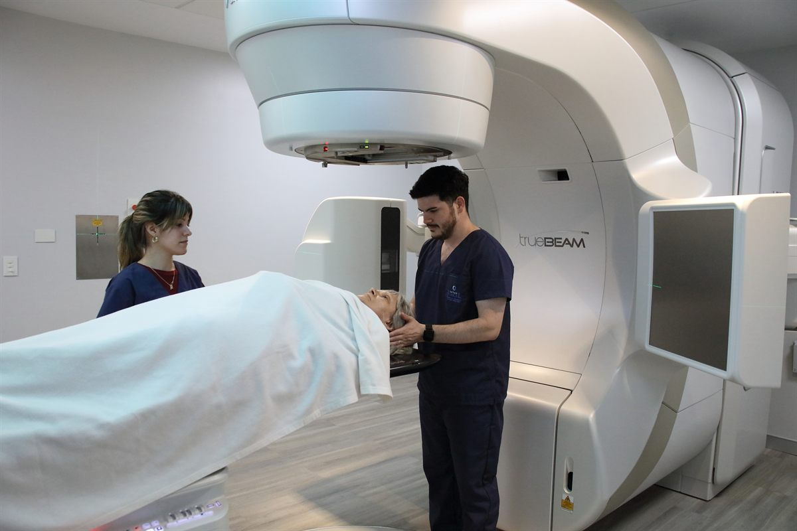
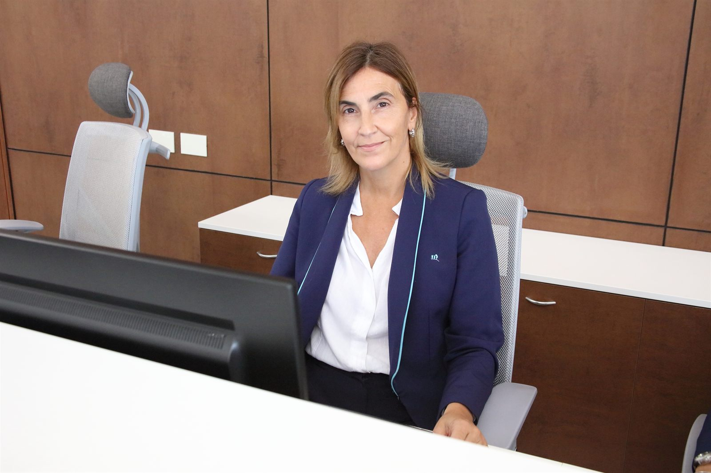

Una estrategia integral para que más médicos elijan a CETAC en el momento exacto en que deciden derivar un paciente oncológico.
Un oncólogo sabe que la mejor tecnología hoy está en muchos centros. Lo que no encuentra con facilidad es un socio que garantice que, una vez que deriva, el proceso simplemente funcione.

Cuando llega el momento de derivar, el médico decide en segundos y casi siempre desde la memoria. El verdadero desafío es ser la primera opción que aparece en su mente.
El médico confirma que necesita un estudio o tratamiento oncológico.
No compara folletos. Recuerda a quién le tiene confianza.
Prioriza rapidez, autorizaciones resueltas y comunicación.
Vuelve a elegir al mismo centro cada vez que la experiencia lo respalda.
Posicionar a CETAC como el aliado estratégico del médico derivante: no por la tecnología, sino por el acompañamiento integral.
Aumentar la presencia de CETAC entre los especialistas que derivan.
Generar nuevos vínculos profesionales con médicos derivantes.
Impulsar consultas y reuniones institucionales concretas.
Incrementar las derivaciones a CETAC a mediano plazo.
Médicos que habitualmente derivan estudios oncológicos, donde el tiempo y la gestión son críticos.

Derivar un paciente es un acto de confianza. El médico necesita saber que, cuando suelta el caso, no lo pierde.

Que el paciente sea atendido pronto.
Que los trámites estén resueltos.
Recibir novedades durante el tratamiento.
Continuar siendo parte del proceso.
Una idea fuerza, tres ángulos para hablarle al médico según el momento y el canal.
Vínculo profesional y responsabilidad compartida entre médicos.
En oncología el tiempo importa. Directo y diferenciador.
Las autorizaciones como diferencial. Potente para paid media.
Procesos orientados a reducir tiempos entre diagnóstico e inicio de tratamiento.
Acompañamiento y gestión de autorizaciones con obras sociales y prepagas.
Diagnóstico, tratamiento y seguimiento dentro de un mismo ecosistema asistencial.
Cada pieza tiene un rol y conduce a la siguiente. Del objetivo de negocio hasta la derivación concreta.
Más derivaciones
Confianza y respaldo
Video médico a médico
LinkedIn Ads
Landing dedicada
Nueva derivación
Una secuencia que lleva al médico del primer contacto a la decisión de derivar.
Médicos hablándole a médicos. Cápsulas de video que generan confianza profesional.
Contenidos que instalan a CETAC como referente clínico y explican su diferencial.
Shorts y reutilización de contenido con hooks para alcanzar nuevas audiencias.
De cada grabación profesional surgen múltiples piezas. Una sola jornada genera contenido para varios meses de campaña.
Médicos reales, a cámara, en CETAC.
Videos cortos (60–90 segundos). Un médico, directo a cámara. Cada guion tiene hook, desarrollo y cierre.

Cápsula 01En CETAC ningún paciente depende de la opinión de un solo médico.
Esto no es un trámite administrativo. Es la forma en que tomamos decisiones.
Cuando usted deriva un paciente a CETAC, no accede a un médico. Accede a un equipo.
Tono sereno y directo, nunca solemne. El médico puede hablar con naturalidad.

Cápsula 02Muchos médicos me dicen lo mismo: que sienten que al derivar pierden de vista al paciente.
Desde el momento en que ingresa un paciente derivado por usted, mantenemos comunicación activa con el profesional de origen.
Derivar a CETAC no es soltar el caso. Es sumar un equipo que ayuda a que todo suceda.
La cápsula más importante para la captación directa.

Cápsula 03En oncología no existen los tratamientos estándar.
Por eso en CETAC el plan de tratamiento no se define desde un protocolo genérico. Se define desde el paciente.
Tratamos personas. Y lo hacemos con la mejor tecnología de la región y el respaldo de un equipo interdisciplinario.
Estructura fija: paciente primero, tecnología después.
El médico decide en un instante si sigue mirando. El hook es lo que detiene el scroll y abre la conversación.
LinkedIn permite segmentar por especialidad y cargo. Es el canal ideal para hablarle solo a quienes derivan.
Presencia sostenida. Mantener la inversión los 30 días asegura que el mensaje esté presente cuando el médico decide derivar.
Cobertura real de la audiencia. El presupuesto permite alcanzar a toda la audiencia objetivo, no solo a una fracción.
Segmentación precisa. Por especialidad y cargo: oncología, hematología, mastología, urología, jefes y directores médicos.
Remarketing. Reimpacto a quienes vieron los videos, visitaron la landing o interactuaron con el contenido.
No es un gasto. Es la inversión que sostiene la presencia continua durante todo el mes.
No solo un formulario: una propuesta de valor pensada para que el médico entienda en segundos por qué derivar a CETAC.
Concentra el tráfico de la pauta en un destino diseñado para convertir consultas en derivaciones.
Desarrollo adicional · se cotiza por separadoIncorporamos la producción audiovisual profesional dentro del servicio actual.
Entendiendo que hoy el contenido en video es una herramienta fundamental para alcanzar los objetivos de posicionamiento y captación, Popcorn integra esta producción como parte de un acompañamiento cada vez más integral y orientado a resultados.

Queremos que CETAC sea la primera opción cuando un médico necesite derivar un paciente.